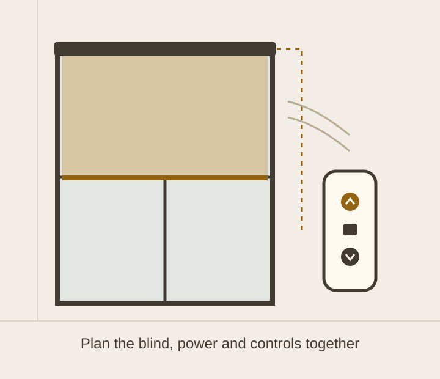

Mill Hill, North London
Motorised blinds in Mill Hill
Convenient control, planned around the blind, the window and your home.
Plan your windows ↗
Plan power and controls early
Motorised blinds use a motor to operate the blind, which can be useful for high windows or several blinds in one room. Depending on the system, controls may include a remote, wall switch, app or compatible smart-home integration.
Battery-powered and wired systems have different installation and maintenance needs. Consider access for charging or battery changes, cable routes and any electrical work before choosing the final system.
Match the fabric to the room
Light-filtering fabric can soften daylight while blackout fabric can reduce light passing through the blind. Privacy depends on the fabric and lighting conditions; an open or sheer weave may allow views into a room after dark.
Discuss the window dimensions, blind weight and required travel with the team. Motor selection and controls must suit the actual product.
Check the complete system
Bring details of any existing home-automation system to your enquiry. App control, voice control, schedules and grouped operation depend on the motor, control protocol and any required hub.
Discuss motorisation and hardware brands including Somfy and Silent Gliss, alongside the window treatment itself. Product availability, power requirements and integration are confirmed for your specification.
Your questions, answered
What should a motorised blind quotation include?
Discuss the blind and fabric, motor, power supply, controls, any required hub, installation and any separate electrical work. Compatibility with an existing smart-home system should be confirmed for the actual products before ordering.
Can motorised blinds work with a smart home?
Some systems support app or smart-home control, sometimes through an additional hub. Compatibility depends on the specific motor, protocol and controller. Tell us which system you already use so the proposed integration can be checked.
Do motorised blinds need mains wiring?
Some products use batteries and others use a wired power supply. The suitable option depends on the blind and installation. Discuss charging access or cable routes before the specification is finalised.
Talk through your windows with us
Visit the showroom or send us your ideas, photographs and approximate dimensions.
Prepare your enquiry ↗